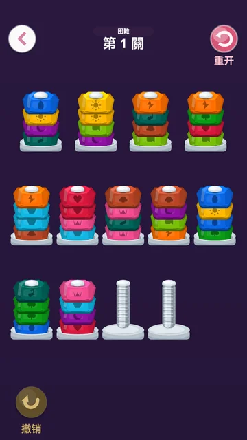
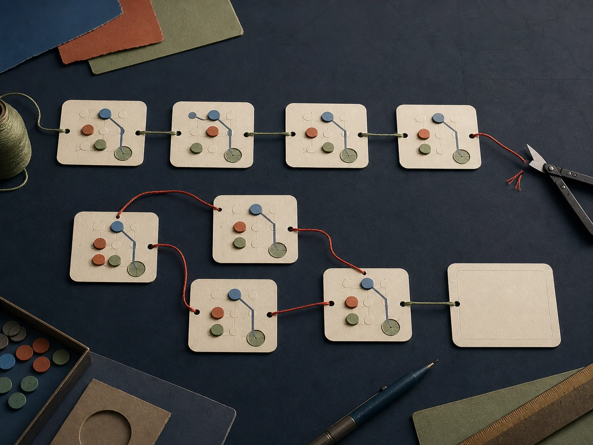

At action ten, the agent clicks a black anchor that is visibly empty. The game accepts the move. A plank falls. Evaluator progress rises from 20.8% to 29.2%. Then the level reports zero legal actions.
The click was not inaccurate, illegal, or pointless. It was fatal because the selected screw came from the wrong support. Once the board settled, planks covered every empty source hole and the screw occupied the last exposed destination. The agent had improved the board and destroyed its ability to touch it again.
A lower-ranked run reaches the byte-identical state and uses the same destination. It chooses a deeper source screw, whose vacated hole remains usable after physics. That run continues for three more transfers. The first meaningful model difference is not the final score. It is which future action survives one apparently good move.
We found four more boundaries like this by reading actions against the board they changed. Together they show that current agents often perceive the immediate move correctly while carrying the wrong object, coordinate, interaction mode, or future constraint into the next state.
What we evaluated
A final answer hides the state transition that produced it.
LongPuzzleBench is a local browser benchmark for GUI agents. An episode supplies a screenshot, a game instruction, and feedback from the previous interaction. The agent clicks, drags, or swipes through a changing board. The benchmark evaluator records exact object state, coverage, path occupancy, legal moves, deadlocks, and completion.
This analysis uses the 782 episodes actually executed by the 18 complete public runs. The models include GPT-5.6 Sol, Terra, and Luna at several reasoning efforts, Kimi K3 and K2.5, six Qwen configurations, and GLM-4.6V. Progressive levels skipped after an earlier failure have no trajectory and are excluded.
For every finding, we reconstructed a local causal chain: visible state, emitted description, chosen action, evaluator transition, and later consequence. We then looked for recurrence and counterexamples. The synchronized comparisons below use the same task and, where possible, the exact same evaluator state.




Behavioral landscape
The failures originate at different layers of the world model.
None of the five findings below can be recovered from a benchmark CSV. Each requires a comparison between what the board contained, what the agent said it contained, and what the next action actually did.
Irreversible-state blindness
A legal move can erase the rest of the game.
Bolt Unscrew starts this level with three empty destinations. Every transfer consumes one, but removing a screw may expose its former anchor for reuse. The catch is physics: a falling plank can cover that source before the next turn. Legality is therefore a property of the current board state; controllability is a property of the state after the board settles.
Thirteen of the 18 public runs on hard level 1 end in the evaluator’s
no_available_hole_deadlock. In 12 of those 13, the terminal transfer
increases progress. All ten top-ranked runs deadlock at action ten, after five
transfers—ten source and destination clicks. Immediate reward points in exactly the
wrong direction.
Sol-medium and Qwen 3.8 reach the same evaluator hash and byte-identical screenshot, then choose different sources for the same hole. Sol’s mid-right source disappears under the falling plank; Qwen’s deeper source remains exposed. Qwen later deadlocks too, but after twice as many boards have exited (10 versus 5), reaching 50.0% rather than 29.2% progress.
Postcondition drift
One nut moved. The target is already full.
Nut and Bolt moves a same-color run from one bolt to another, but only as many nuts as the target can hold. An agent can select two yellow nuts and legally move just one. A second rule compounds the error: if the next target is full or mismatched, the source remains selected. The following click is still a destination attempt, even if the agent narrates it as selecting something new.
The same partial transfer: one loop, one repair.
Advance the synchronized frames to follow interaction mode, not just stack color.
Interactive matched Nut and Bolt traces (JavaScript required).
On the hard-1 board, 15 of 18 runs repeat at least one identical illegal source-to-target pair on consecutive actions. Seventeen runs fail; the only success makes two illegal target attempts but repeats neither. The matched traces show why: Qwen 3.8 keeps sending the remaining yellow to an already full bolt, while Sol-medium experiences the same truncated transfer with purple, notices the failed postcondition, cancels selection, and moves the three-purple stack in the opposite direction.
The positive trace rules out a blanket endurance explanation for this model. On hard level 2, Sol-medium fills both empty buffers after four actions, then executes 26 valid transfers with no empty bolt before reopening workspace. The brittle step in the matched failure is checking what a transfer actually did and updating interaction mode.
Interactive recorded Nut and Bolt trajectory (JavaScript required).
Cross-path constraint failure
The empty square is the difference between finishing and rebuilding.
Color Connect looks like eight independent endpoint-matching problems. It is one shared occupancy problem. A path can be perfectly legal and complete while consuming the only corridor available to a color that has not started yet.
The first divergence is one empty cell.
Both runs reach the same active coral prefix before choosing where to turn.
Interactive matched Color Connect traces (JavaScript required).
The successful route leaves row 3, column 5 unused; purple later passes through it. The rationale explains the turn as avoiding the maroon endpoint; it does not explicitly name purple or reserve the cell in advance. The failed run initially finishes coral more directly. When purple becomes impossible, it correctly explains that coral must change. What it fails to do is carry that constraint into the reconstruction.
Exact board-state churn appears in 32 of 33 failed Color Connect episodes. It also appears in 23 of 48 successes, so revisiting a state is not itself the failure. What matters is whether the next branch changes the occupancy graph. Here, deletion removes work without changing the next branch; the successful reference never cancels a path.
Stale localization
The target is right. The agent is on the wrong row.
Near the end of Maze Paint hard level 1, Terra-high and Kimi K3-high reach the exact same evaluator state: the ball sits at row 10, column 2, and one dark cell remains at row 9, column 4. Both slide right to row 10, column 7. From there, the board pixels are nearly uniform; the remaining task is coordinate geometry.
Knowing the missing cell is not enough.
The ball and target must be represented in the same coordinate frame.
Interactive matched Maze Paint traces (JavaScript required).
Kimi’s action note says the ball is at r9c2 and a right swipe will paint
r9c4. The evaluator says the ball is on one-based row 10. After the swipe
crosses the entire bottom corridor without changing the painted mask, the same row
assignment survives. Across three recovery warnings, that wrong bottom-row
assignment persists; the episode ends with one cell dark.
Terra is not initially more accurate everywhere. Earlier in the same run it also declares completion too soon. The difference is correction: it eventually binds the residual cell, current ball coordinate, and legal stopping points into one route. Across the corpus, 28 of 41 failed Maze episodes contain a swipe that leaves the exact evaluator state unchanged. In the matched trace, that broad signature has a more specific cause: Kimi predicts a stop or crossing that the movement rule does not permit.
Part–whole segmentation
Some agents split one car into two.
The red Rush Hour target is an articulated horizontal sprite: cargo body plus cab. In five hand-verified episodes across four model configurations, the emitted description assigns the cab a separate identity—“small red vertical car”—and tries to drag that imagined object vertically. The action has no effect because no such vehicle exists.
Binary success can hide an object-decomposition error.
Both runs solve the board; the trajectories show why one uses twice the actions.
Interactive matched Rush Hour traces (JavaScript required).
Recovery is possible. Terra-high makes the same error on easy level 6, sees an unchanged frame, immediately renames the sprite “the horizontal red target,” and solves. Terra-low needs two failed fragment moves on medium level 3 before switching. The three other selected episodes fail. One abandons the split-object behavior and later attempts several horizontal target exits, but still times out.
The divergence occurs before spatial planning. Once the cab is granted its own identity and motion axis, blocker relationships are computed over an object that is not in the game. Recovery requires deleting that object hypothesis when direct manipulation produces no independent motion.
What successful trajectories do differently
The delta appears at the constraint boundary.
In the matched comparisons, successful behavior acts on the state variable the constraint depends on. After a rejected Nut destination, it cancels the still-active source. In Color Connect, it leaves the cell later used by purple unoccupied. After a last dark square sits one row above, it changes rows. When a Rush Hour fragment refuses to move, it merges that fragment back into the articulated target.
Failed recovery often varies the motor command while preserving the belief: another click on the full bolt, another reconstruction of the same path, another swipe along the wrong row, another vertical drag on the nonexistent car. The input changes; the causal model does not.
Bolt Unscrew shows why correction can arrive too late. The benchmark terminates as soon as the critical transfer creates the dead state, so the agent must compare post-physics counterfactuals before acting. A lower-ranked model makes the better source choice in the matched example: global rank does not guarantee the right local world model.

Conceptual illustration, not empirical evidenceWhat agents still need
Track the transition, then invalidate the failed layer.
- Persistent object and interaction identity. Track not only which object exists, but which source remains selected and which screen coordinate now refers to it.
- Counterfactual actionability checks. Predict the settled board after physics or occupancy changes, then ask whether at least one route or legal manipulation remains.
- Explicit residual and reservation ledgers. Store unpainted cells, stopping positions, and cells promised to future paths instead of re-reading a nearly uniform board from scratch.
- Representation-level recovery. Use no-effect evidence to delete an object, row, direction, or branch hypothesis. A retry is useful only if it changes the feasible frontier.
Scope and limits
What the traces establish.
The corpus covers one seed, the full-instruction progressive protocol, and 18 complete public runs. Counts use canonical executed episodes; task mix differs across models because a failed level stops the remainder of that game–difficulty cell. Mechanism claims use evaluator state, source game rules, screenshots, actions, and emitted descriptions. “World model,” “reservation,” and “object identity” are behavioral interpretations of those visible mismatches, not claims about hidden chain of thought, training causes, or architecture.
LongPuzzleBench does not reduce to agents running out of patience. The revealing errors happen much earlier: a source hole that will be covered, a selected nut that never changed, an empty cell already needed elsewhere, a ball one row below its own plan, a cab mistaken for a separate car.
Sol-medium’s hard-2 trace executes 26 valid transfers with no empty buffer; long, exact dependency execution is already possible. What repeatedly breaks is a durable account of how each action changes the world—and a recovery policy that replaces that account when observation contradicts it.